Product and Systemic Design · 2023
PRO LEMNA
Systemic design for the sustainable cultivation of Lemna Minor in the livestock supply chain
The increasing drive toward centralized industrialization and globalization of agricultural and food practices, in conjunction with population growth, highlights challenges related to access to adequate food supplies. In this scenario, critical issues emerge related to food supply in some parts of the world and the inefficient use of fodder, often for livestock feed.
In this context, Lemna Minor, a plant native to the Italian territory, emerges as a positive solution due to its phytodepuration properties of wastewater. This plant is able to convert wastewater into valuable resources through its treatment, turning it into a nutrient-enriched irrigation option for fields.
It also provides a local source of protein, promoting easily accessible production for swine farms, which are still tied to global feed supply chains. The contribution of this plant promotes a local and sustainable production approach in animal nutrition, with a focus on social equity and ecological balance.
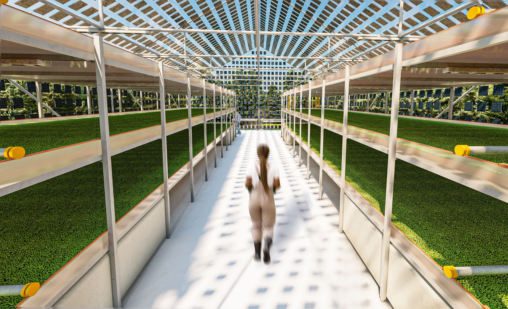
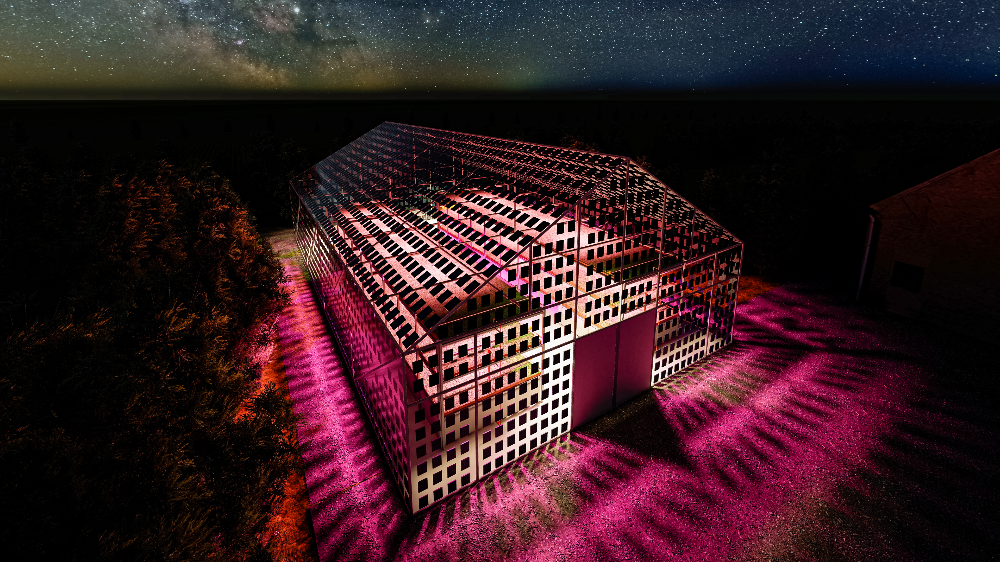
Digestion of Swine Wastewater in the Livestock Sector
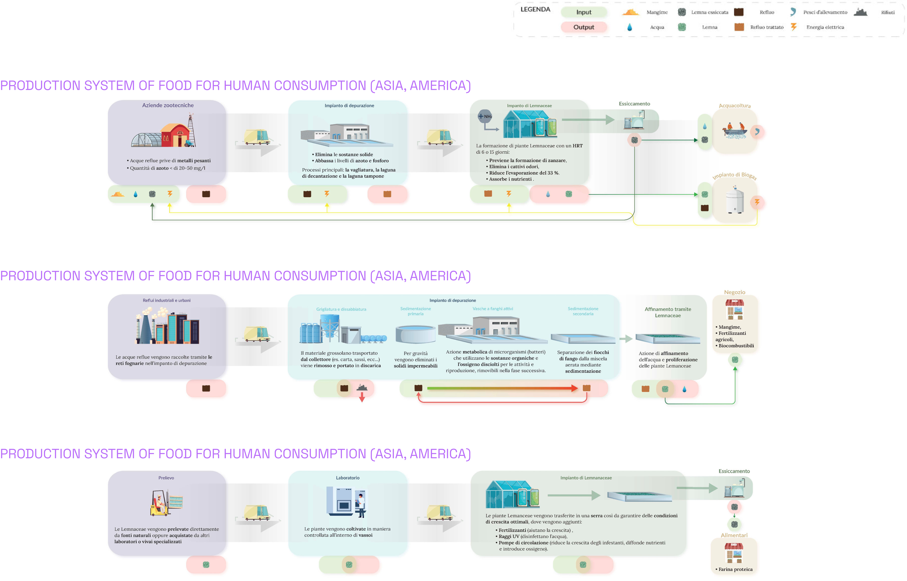
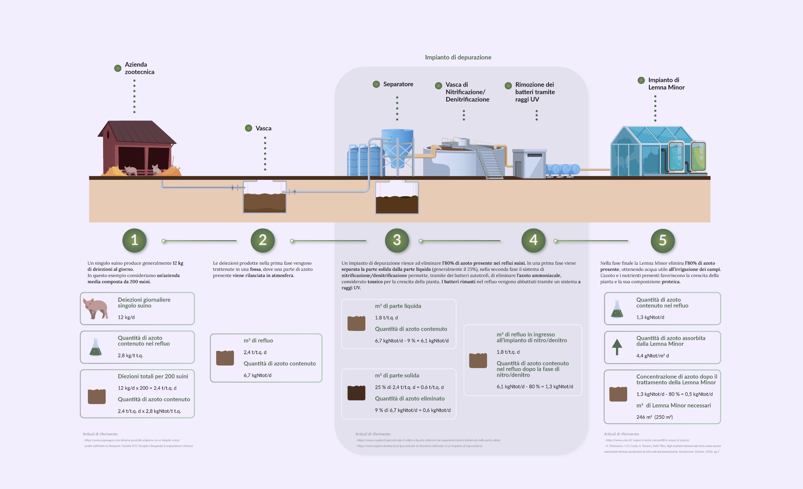
Concept of the Pro Lemna Hydroponic System
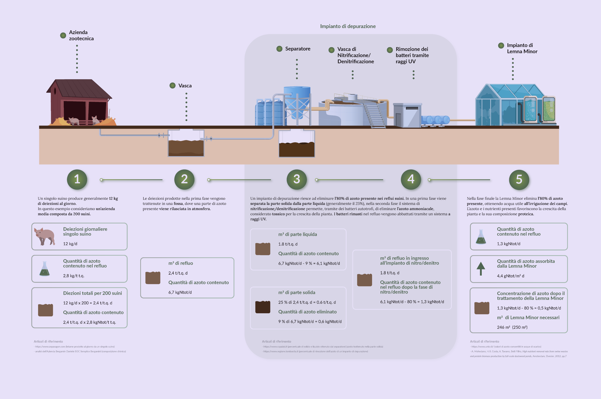
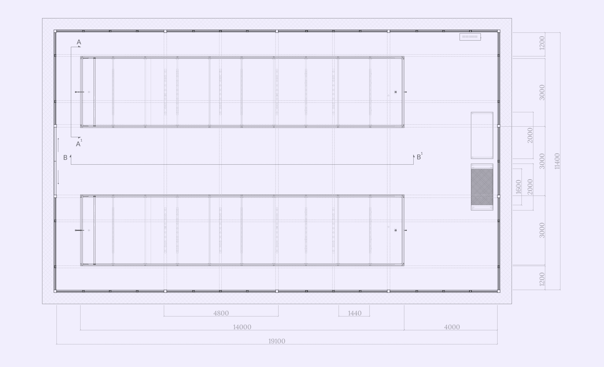
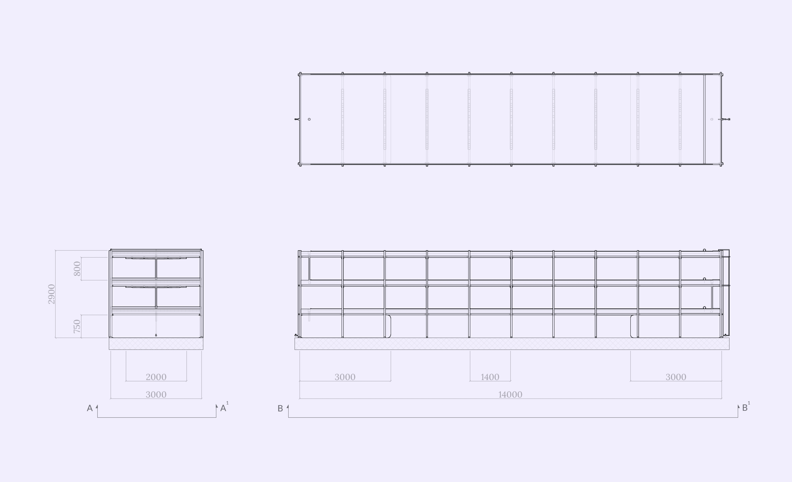
Lemnaceae Production System in the World
In some cases, research directions have deviated from the initial trajectory, favoring the economic aspect — a direction that deviates from the necessary change that the plant can offer in local feed supply, one of the variable costs that companies often fail to support.
In the pig sector, water lentil plays a crucial role by promoting a production model that embraces the principles of accessibility, social and ecological sustainability, going beyond the mere pursuit of profit.
Project Layout System
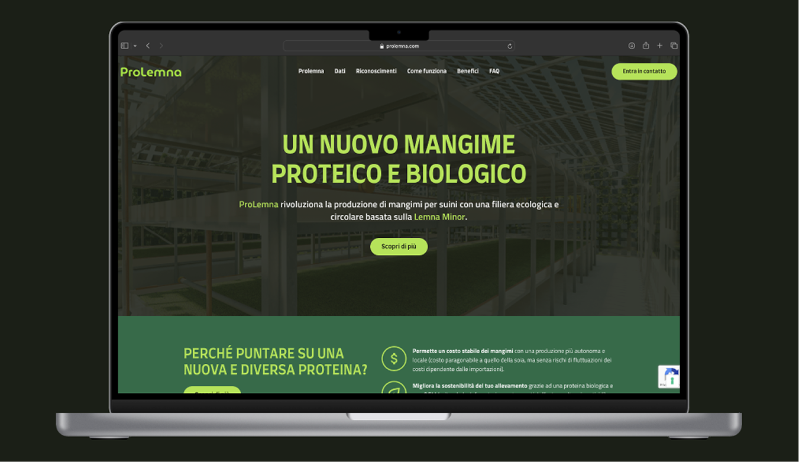
Render Dimostrativi e Flussi di Percorso
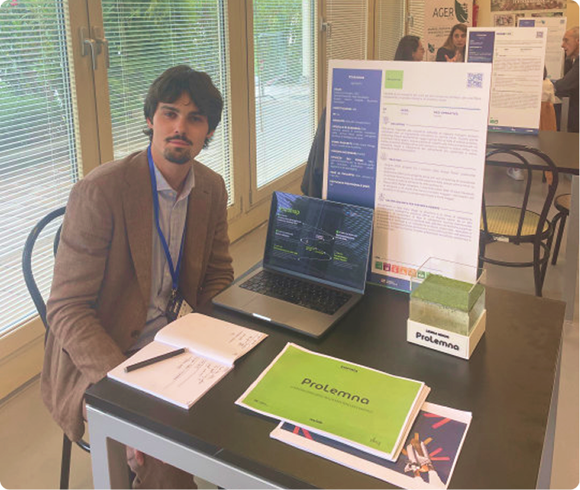
ProLemna Startup
Starting as a bachelor thesis project, ProLemna won the Range Rover Leadership Academy in 2024 and began its journey as a startup and it was subsequently incubated at 2i3T. As founder and Business Developer, I translate the systemic approach into operational management, coordinating the strategic vision to ensure the circularity of the model and taking care of business development through business plans and financial analysis.
I also manage stakeholder relations, handling relationships with investors and partners through pitching, and oversee project management, guiding a multidisciplinary team towards market entry.
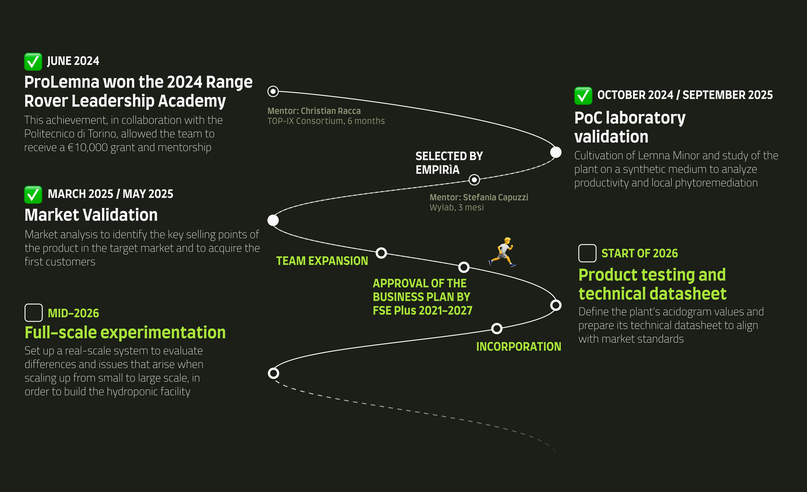
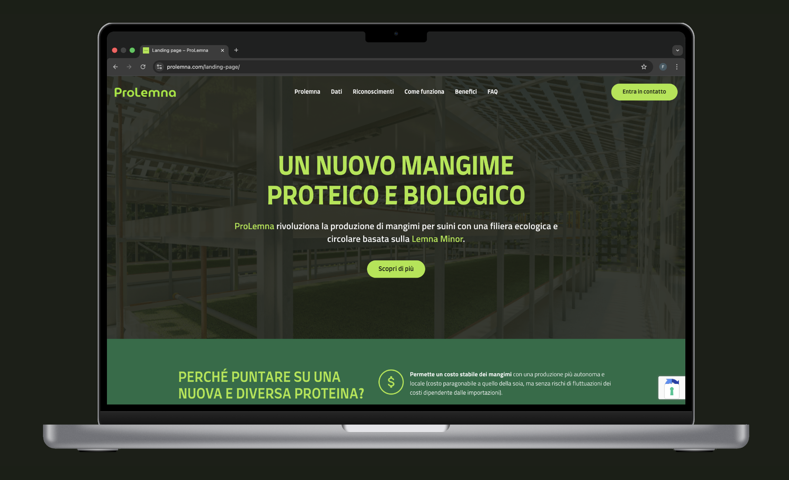

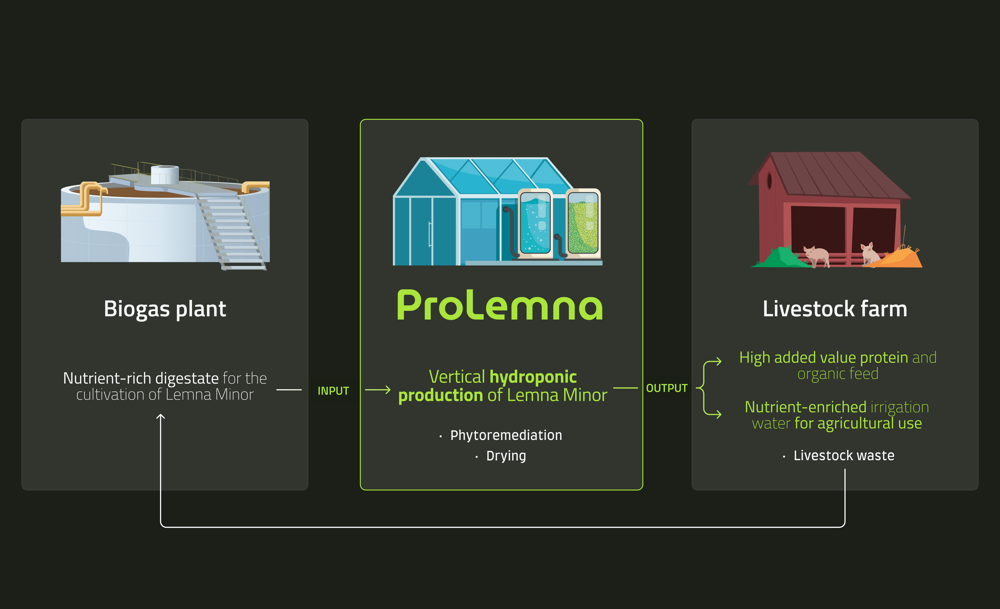